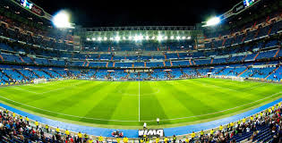

Escolher o melhor tipo de luzes para campos esportivos deve passar por ter em consideração, não apenas uma solução de curto-prazo, mas deve apontar para um aumento da qualidade das condições de jogo, com melhores níveis de luminosidade, tentando, simultâneamente, que os custos e despesas de electricidade pesem o menos possível no orçamento global.
